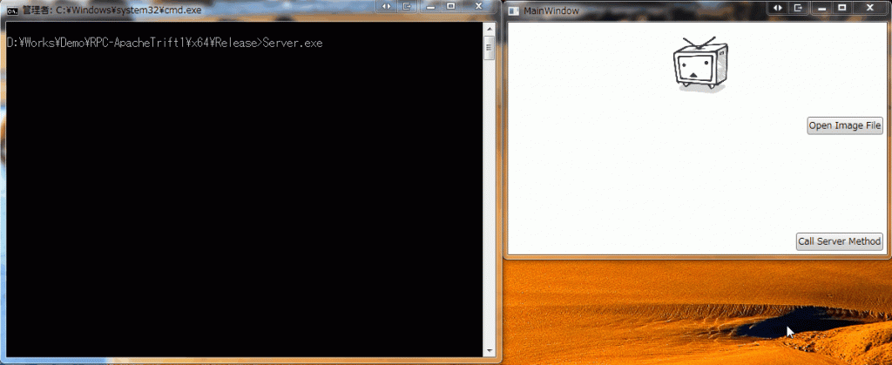

Introduction
前回は、Apache Thriftのビルドを実施しました。 今回は、C++のサーバーとC#のクライアントを作成します。 今回のソースは下記になります。

Preparation
順番に作成していきます。
Win32コンソールアプリ
Visual Stuidoで、Win32コンソールアプリを作成します。
追加のインクルード ディレクトリ
作成したプロジェクトのプロパティからC/C++ -> 全般を開き、追加のインクルード ディレクトリに下記を追加します。
- {boost_install_dir}
- {thrift_install_dir}\lib\cpp\src\thrift\windows
- {thrift_install_dir}\lib\cpp\src\thrift
- {thrift_install_dir}\lib\cpp\src
追加の依存ファイル
ライブラリアン -> 入力を開き、追加の依存ファイルに下記を追加します。
- libboost_thread-vc140-mt-gd-1_59.lib
- libboost_chrono-vc140-mt-gd-1_59.lib
- libthrift.lib
- libthriftnb.lib
- libeay32.lib
- ssleay32.lib
追加のライブラリ ディレクトリ
ライブラリアン -> 全般を開き、追加のライブラリ ディレクトリに下記を追加します。
- {boost_install_dir}\lib64-msvc-14.0
- {thrift_install_dir}\lib\cpp\Debug
- {openssll_install_dir}\lib
lib64-msvc-14.0は、インストールしたboostのVCのバージョンに依存します。lib64-msvc-12.0かもしれません。 最後の、Debugの部分は、Release, Release-mt, Debug, Debug-mtから好きなのを選んでください。つまり、libthriftビルド時の出力先です。
.thriftファイル
クライアントとサーバーを生成するための定義ファイルです。 今回は下記のようなファイルImageProcService.thriftです。 [code lang=”thrift”] service imageProcService { binary Revert(1:binary image,2:i32 width,3:i32 height), } [/code] Revertは渡されたバイナリ(RAW画像データ)の画素を反転させます。
コード生成
前回ダウンロードしたThriftのコンパイラーを使ってコードを生成します。 [code lang=”batch”] thrift-0.10.0.exe-r –gen cpp ImageProcService.thrift [/code] 上記のコマンドで、gen-cppというフォルダが生成され、その中に、
- imageProcService.cpp
- imageProcService.h
- imageProcService_server.skeleton.cpp
- Server_constants.cpp
- Server_constants.h
- Server_types.cpp
- Server_types.h
が作成されます。
for C++
サーバー側です。 前項の、imageProcService_server.skeleton.cppがサーバー側の実装のスケルトンコードなので、そのまま流用します。 下記がソースです。 [code lang=”cpp”] // Server.cpp : コンソール アプリケーションのエントリ ポイントを定義します。 //
#include “stdafx.h” #include “gen-cpp/imageProcService.h” #include <thrift/protocol/TBinaryProtocol.h> #include <thrift/server/TSimpleServer.h> #include <thrift/transport/TServerSocket.h> #include <thrift/transport/TBufferTransports.h>
using namespace ::apache::thrift; using namespace ::apache::thrift::protocol; using namespace ::apache::thrift::transport; using namespace ::apache::thrift::server;
using boost::shared_ptr;
class imageProcServiceHandler : virtual public imageProcServiceIf { public: imageProcServiceHandler() { // Your initialization goes here }
void Revert(std::string& _return, const std::string& image, const int32_t width, const int32_t height) { unsigned char* tmp = static_cast<unsigned char*>(malloc(sizeof(unsigned char) * image.length())); copy(image.begin(), image.end(), tmp);
printf(“image length: %llu\n”, image.length());
for (int index = 0; index < image.length(); index++) tmp[index] = 255 - tmp[index];
_return.append(tmp, tmp + image.length()); printf(“_return length: %llu\n”, image.length()); free(tmp);
printf(“Revert\n”); }
};
int main() { int port = 9090; shared_ptr
TSimpleServer server(processor, serverTransport, transportFactory, protocolFactory); server.serve(); return 0; }[/code] 注意するのは、*.thriftで指定したimageの型がbinaryなのに、std::stringになっていることでしょう。 これはバグではなく仕様です。unsigned char**になることを期待していましたが仕方ありません。 なので、うまく型を変換して内部のデータにアクセスします。 戻りもstd::stringなので、操作したデータを格納するようにします。 しかし、ビルドが通りません。 どうも調べてみるとlibthriftのソースでいくつか必要なファイルがプロジェクトから除外されていることが原因の模様。 そのため、libthriftのプロジェクトに下記を追加します。
- src\thrift\server\TConnectedClient.cpp”
- src\thrift\server\TConnectedClient.h
- src\thrift\server\TNonblockingServer.cpp
- src\thrift\server\TNonblockingServer.h
- src\thrift\server\TServer.cpp
- src\thrift\server\TServerFramework.cpp
- src\thrift\server\TServerFramework.h
次に、libthriftのプロパティを開きます。 C/C++ -> 全般を開き、追加のインクルード ディレクトリに下記を追加します。
- {libevent_install_dir}
- {libevent_install_dir}\include
- {libevent_install_dir}\WIN32-Code\nmake
これで、libthriftを再度ビルドし、利用する側もリビルドします。 今度は成功するはずです。
for C
クライアント側のソースです。 C++側と異なり、Thriftのビルドは不要でNugetで完結します。 パッケージマネージャー コンソールから下記のコマンドでインストールします。 [code lang=”batch”] Install-Package ApacheThrift -Pre [/code] 2017/04/09現在、安定版は、0.9.3が最新で、C++の最新版である0.10.0とは異なるので不安ですが、これしかないので、これを使います。 クライアントである、C#側は、.NETでRPCを試してみる gRPC編 第1回と同じ感じです。 クライアントのソースは、Thriftのコンパイラーを使ってコードを生成します。 [code lang=”batch”] thrift-0.10.0.exe-r –gen csharp ImageProcService.thrift [/code] で生成できます。gen-csharpというフォルダが生成され、その中に、
- imageProcService.cs
だけ生成されます。 上記のファイルをC#プロジェクトの適切なフォルダに移動します。 サーバーへアクセスするソースだけ記載します。 [code lang=”csharp”] using System; using System.Windows; using System.Windows.Media; using System.Windows.Media.Imaging; using GalaSoft.MvvmLight; using GalaSoft.MvvmLight.Command; using ImageProcClient.Contracts; using ImageProcClient.ViewModels.Interfaces; using Microsoft.WindowsAPICodePack.Dialogs; using Thrift.Protocol; using Thrift.Transport;
namespace ImageProcClient.ViewModels {
internal sealed class MainViewModel : ViewModelBase, IMainViewModel {
#region Properties
private RelayCommand _OpenFileCommand;
public RelayCommand OpenFileCommand { get { return this._OpenFileCommand ?? (this._OpenFileCommand = new RelayCommand(() => { using (var dlg = new CommonOpenFileDialog()) { dlg.IsFolderPicker = false; dlg.AddToMostRecentlyUsedList = false; dlg.AllowNonFileSystemItems = false; dlg.EnsureFileExists = true; dlg.EnsurePathExists = true; dlg.EnsureReadOnly = false; dlg.EnsureValidNames = true; dlg.Multiselect = false; dlg.ShowPlacesList = true;
var dialogResult = dlg.ShowDialog(); if (dialogResult != CommonFileDialogResult.Ok) return;
var bitmap = new BitmapImage(); try { bitmap.BeginInit(); bitmap.UriSource = new Uri(dlg.FileName); bitmap.EndInit(); this.SourceImage = bitmap; } catch (Exception ex) { MessageBox.Show(ex.Message); } }
this._ServerRequestCommand?.RaiseCanExecuteChanged(); }, () => true)); } }
private ImageSource _ResultImage;
public ImageSource ResultImage { get { return this._ResultImage; } private set { this._ResultImage = value; this.RaisePropertyChanged(); } }
private RelayCommand _ServerRequestCommand;
public RelayCommand ServerRequestCommand { get { return this._ServerRequestCommand ?? (this._ServerRequestCommand = new RelayCommand(() => { var bitmap = this._SourceImage as BitmapImage; if (bitmap == null) return;
var width = bitmap.PixelWidth; var height = bitmap.PixelHeight; var stride = (width * bitmap.Format.BitsPerPixel + 7) / 8; var bitsPerPixel = bitmap.Format.BitsPerPixel; var bytesPerPixel = bitsPerPixel / 8; var originalPixels = new byte[width * height * bytesPerPixel]; bitmap.CopyPixels(originalPixels, stride, 0);
try { TTransport transport = new TSocket(“localhost”, 9090); TProtocol protocol = new TBinaryProtocol(transport); imageProcService.Client client = new imageProcService.Client(protocol);
transport.Open(); try { client.send_Revert(originalPixels, width, height); var resultPixels = client.recv_Revert(); if (resultPixels != null) { var bmpSource = BitmapSource.Create( width, height, bitmap.DpiX, bitmap.DpiY, bitmap.Format, null, resultPixels, stride); if (bmpSource.CanFreeze) bmpSource.Freeze();
this.ResultImage = bmpSource; } } finally { transport.Close(); } } catch (Exception x) { Console.WriteLine(x.StackTrace); }
}, () => this._SourceImage != null)); } }
private ImageSource _SourceImage;
public ImageSource SourceImage { get { return this._SourceImage; } private set { this._SourceImage = value; this.RaisePropertyChanged(); } }
#endregion
}
} [/code] gRPCとことなり、メソッドの呼び出し(send_XXXX)で即座に結果を返すわけでなく、recv_XXXXを追加で呼ぶ必要があります。 こうなると、余計な通信が発生する気がしますが…そういう仕様なので仕方ないのでしょう。
Test
実行結果です。 入力画像が反転しているのがわかります。

別マシンでサーバーを起動して、IPを変更してもきちんと動きます。
{kind=link}
Conclusion
C++側が面倒でしたが、それ以外はgRPCと大差ありません。 一度ライブラリを作ってしまえば後は流用できますので、導入コストが少し高いだけです。 その後は、マシン間通信がこれでもか、というくらい楽になります。 C++でサーバー側を実装するなら、gRPCよりもThriftのがおすすめな感じはします(gRPCのC++は試していませんが…)
Source Code
https://github.com/takuya-takeuchi/Demo/tree/master/RPC-ApacheTrift1